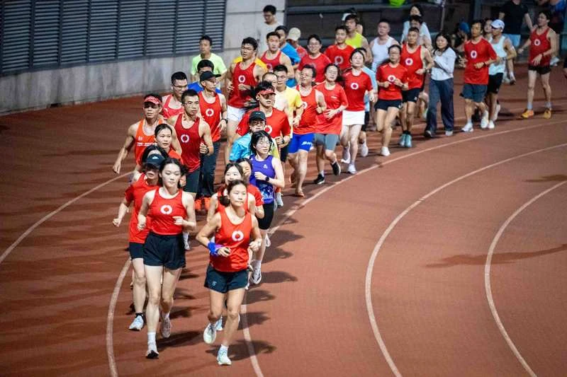
SHENZHEN深圳
深圳 YOU跑团
风里雨里，每周三宝体等你！
第一次一起跑步？点击这里


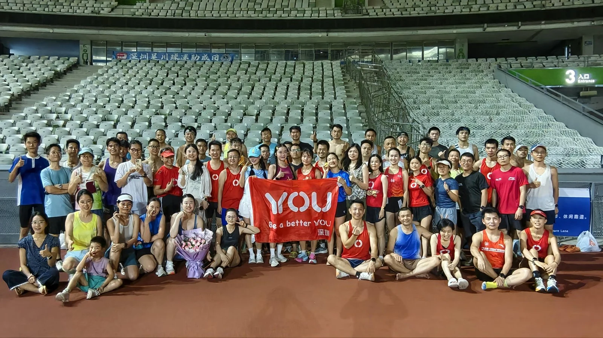
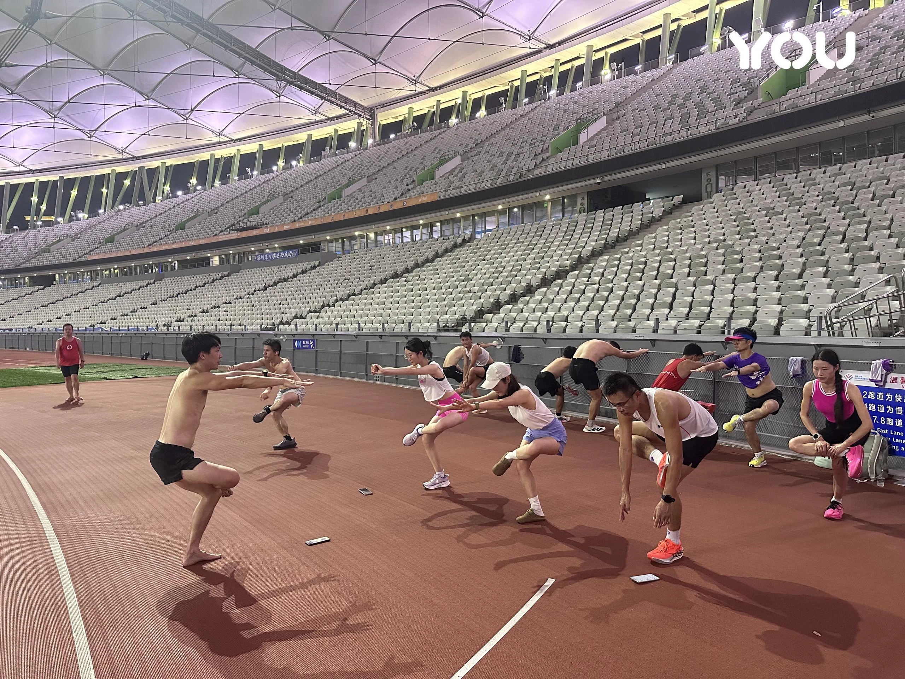
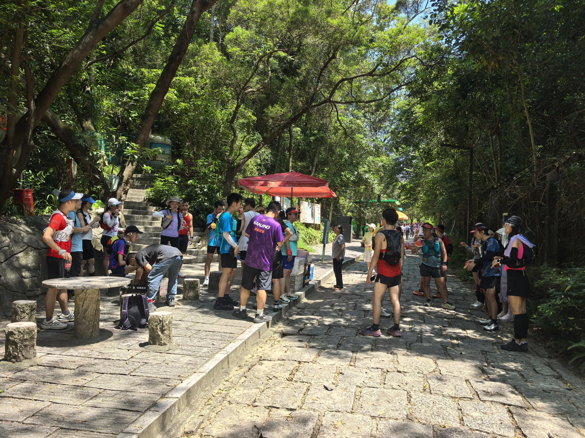
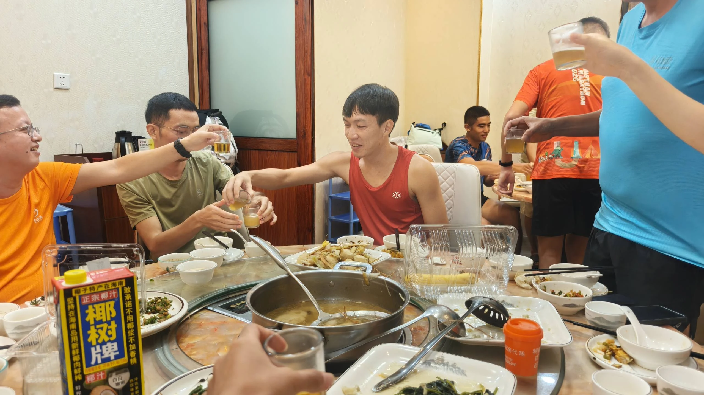
跑团介绍 / 关于 YOU
把跑步，
放进每一周。
深圳 YOU 跑团。
Be a better YOU!
扎根深圳的非营利、自组织跑步社群。跑团在 2025 年迎来十周年，从固定例跑到马拉松、越野与主题活动，让更多人享受跑步、保持热爱，遇见更好的自己。
周三在宝安体育场，分强度课与健康慢跑；周日到大沙河跑长距离。跑友与志愿服务组一起组织活动、互相支持。无论第一次跑步，还是挑战个人纪录，都欢迎你。
周三晚 · 宝安体育场强度课 / 健康慢跑
周日上午 · 大沙河长距离合练
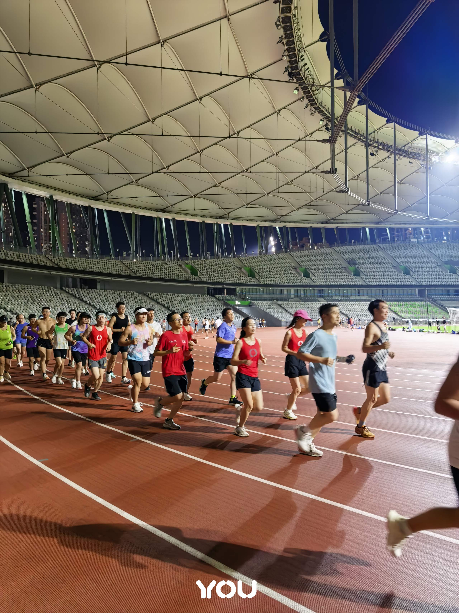
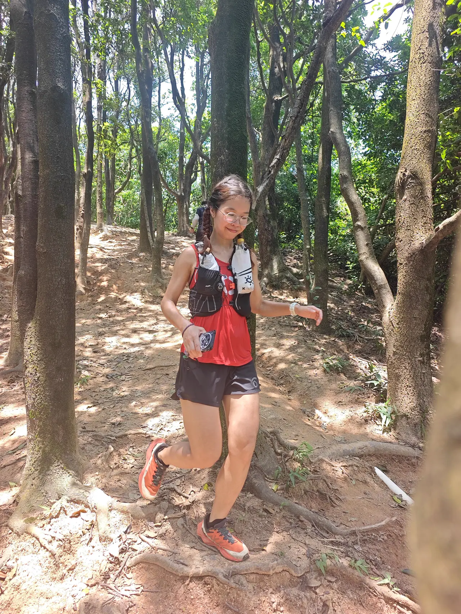
现场签到
到集合点后，找穿红色团服的小伙伴咨询签到。
一起热身
跟着队伍完成跑前热身。
拍张合照
热身后合影，再开始训练。
选组开跑
强度课、健康慢跑，两组任选。
自我介绍
跑完聚在一起，认识新跑友。
免费补给
水、饮料、水果等免费提供，具体品类以当天准备为准。按需取用。
跑后团建
有时会安排聚餐或其他团建，视当次活动通知和现场安排，自愿参加。
怎么报名？临时不来怎么办？
请提前通过互动吧或小红书报名。需要取消，请最晚于活动当天 17:00 取消报名。临时不来，请通过公众号的“鸽子包”打赏 5 元。
在哪集合？
周三在深圳宝安体育场主场 3 号门集合。可从地铁 11 号线宝安站 D 出口，或 1 号线宝体站 D 出口前往。周日在大沙河跑长距离，集合点、路线、时间和临时变动以当周一起跑通知为准。查看例跑帖中的地点与交通说明 ↗
到场怎么找服务组？迟到了找谁？
找穿红色团服的小伙伴，咨询签到问题。迟到后同样可以找他们询问。
存包、更衣和饮水怎么安排？
周三宝体有专人看包；周日大沙河长距离（LSD）有存包车。可以在厕所更衣。活动中途有水、饮料、水果等补给，具体品类以当天准备为准。
天气或场地变化，去哪确认？
请关注跑团微信群，天气、场地及其他临时调整会在群内通知。出发前查看群内最新消息。
一定要跟强度课吗？
现场有强度课组和健康慢跑组，按自己的节奏选就行。A–D 是冬训全马目标，选组时可参考近期 5K、10K、半马或全马成绩和稳定周跑量；训练中可减组或降档。
周三操场怎么休息？
强度课组间按课表计时休息。结束一组后留出跑道，不在内道慢跑恢复。
去哪看跑团动态？
活动回顾和照片可看 小红书 · YOU 跑团；冬训训练安排以本站课表为准。
参加活动及补给收费吗？
日常例跑免费参加，现场有免费补给。不定期还有品牌赞助福利及免费赛事名额，详见 跑友福利 和活动公告。
Keep上怎么找到跑团？
打开 Keep App，搜索「YOU跑团」即可查找并申请加入。也可在本站 联系新人咨询。
跑友福利 / MEMBERS' PERKS
一起跑，福利也一起分享。
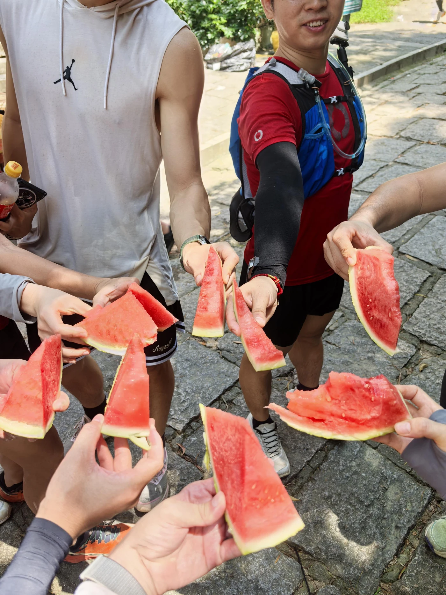
日常例跑免费参加。
带上跑鞋，就可以一起出发。
- 01
免费补给
活动现场准备水、饮料、水果等补给，由服务组和跑友共同支持。
- 02
不定期品牌福利
跑鞋装备体验、品牌物料、主题跑及赞助福利，和跑友一起体验。
- 03
免费赛事名额
不定期提供合作跑步赛事、马拉松等免费参赛名额，具体名额和领取方式以活动公告为准。
冬训课表
2026–27 冬训 · 四组训练安排选好组别，查看这一周的距离、配速与休息安排。
结合近期成绩与稳定周跑量选组，训练中可减组或降档。
跑友风采 / MEET OUR RUNNERS
跑出属于 YOU 的成绩。
半马夺冠、山野站台、四人接力。从几场比赛，认识一起训练的 YOU 跑友。

ROAD / 马拉松
任婉秋（秋大大）
女子冠军 · 1:27:542025 福建永定土楼半程马拉松
赛事战报 ↗- 2026 石家庄马拉松
全马 PB · 净计时 2:48:37 ↗ - 2025 珠海马拉松
全马女子第4名 · 2:59:14 ↗ - 2025 清远马拉松
半马女子季军 · 1:24:31 ↗ - 查看其跑进一级线的赛果 ↗

VERTICAL / TRAIL
徐婷（夏至）
女子冠军2026 深圳职工垂直登高大赛
深圳工会成绩公布 ↗- 2026 梧桐三洲
女子冠军 · 3:12:50 ↗ - 2025 神农架森林越野赛 70KM
女子季军 ↗ - 2025 大武夷超级山径赛 60KM
女子第4名 ↗
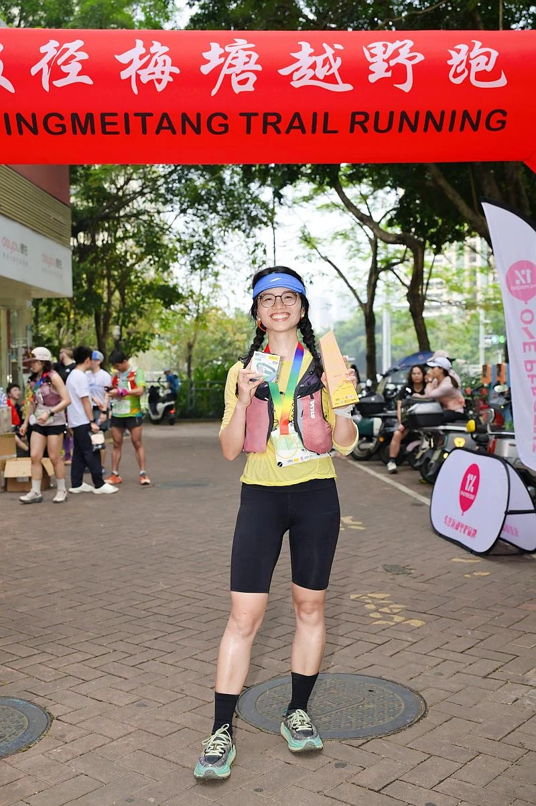

2026.03.08 · KEEP 城市K马深圳站
女子接力冠军
are YOU ok
阿燕 · 粉大人 · Elisa · Judy
四位跑友携手夺得女子接力第一名，同日跑不快的小黑获得男子5KM亚军。
查看冠军战报 ↗查阅历年马拉松、越野、垂直登高和团体赛事成绩；每条记录都可打开原帖。
查看完整荣誉榜 ↗
跑友相册
户外训练与跑后聚餐户外训练

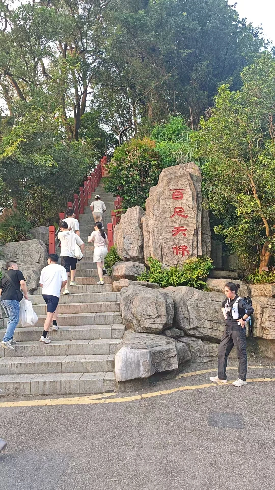
跑后聚餐
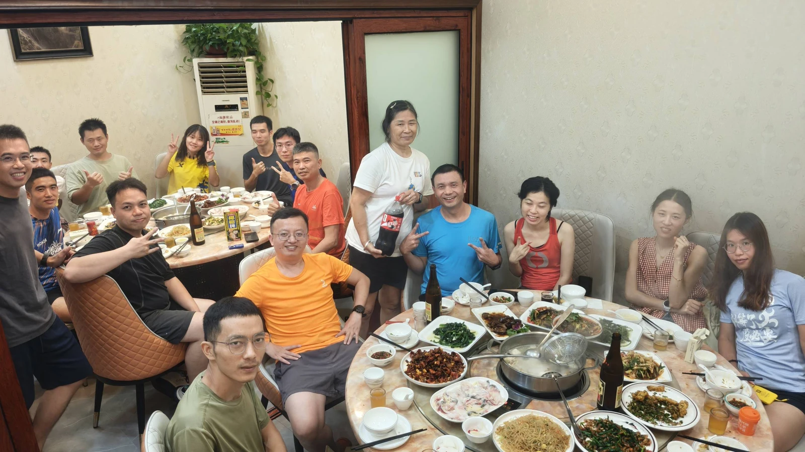
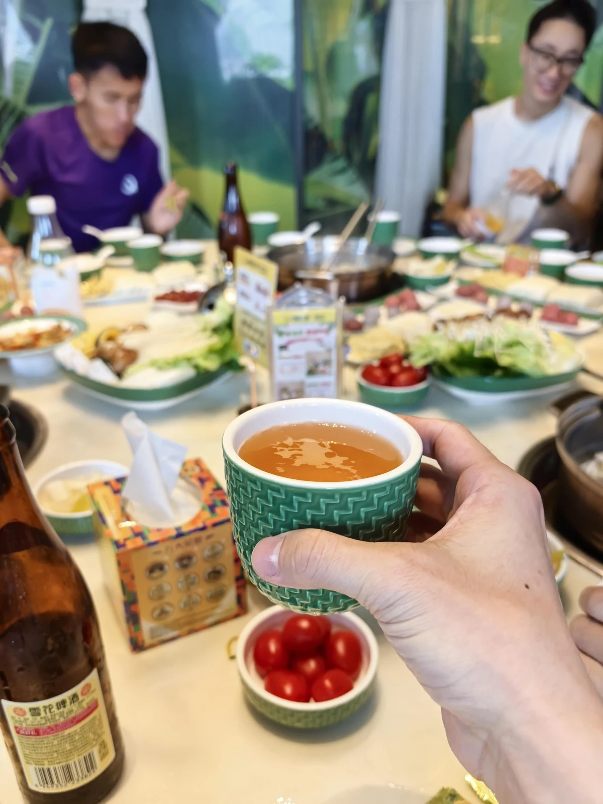
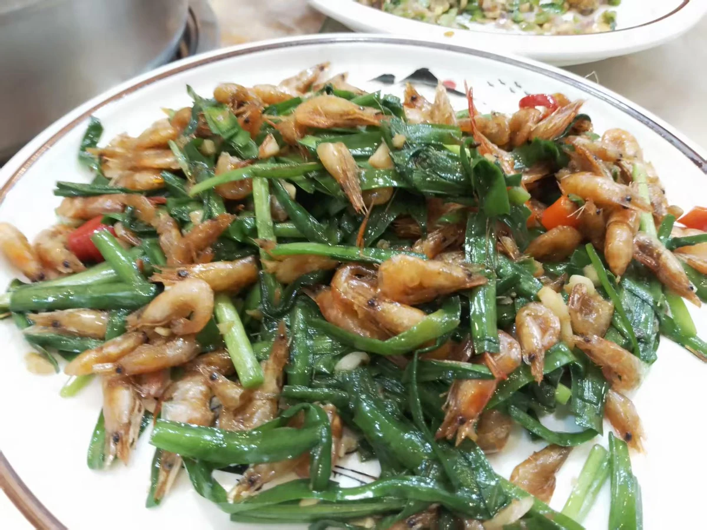
品牌合作
和 YOU，
办一场跑步活动。
从每周一起跑到主题活动，
把品牌体验带进真实的跑步现场。
可洽谈方向
01
主题团跑
围绕活动主题、路线与参与人群，共同沟通组织安排。
02
产品体验
结合跑鞋、装备或补给，讨论适合跑友的线下体验形式。
03
赛事联动
围绕赛事前后，洽谈跑友活动与线下交流。


佳沃 × YOU 早餐跑
关注与联系
新人参加、入群与品牌活动合作，请选择对应的微信联系人。跑友动态可关注 YOU 官方账号。
直接联系
新人咨询与入群
第一次参加、跑步咨询、加入跑团微信群。
微信扫码 · 新人咨询与入群
查看微信二维码 ↗品牌商务合作
品牌活动、商务合作及赛事联动咨询。
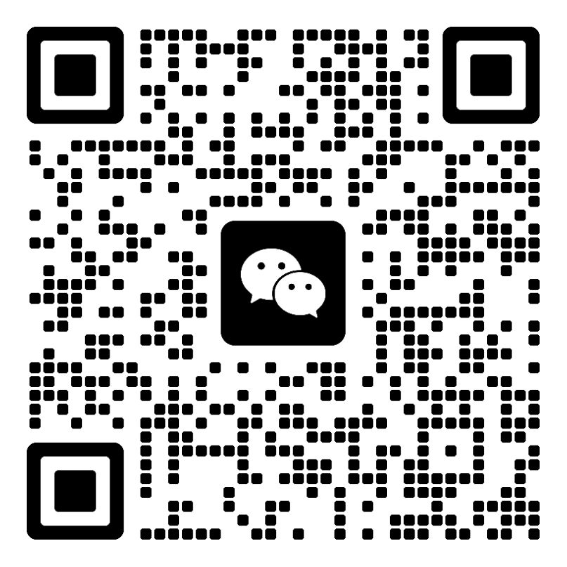
微信扫码 · 商业活动联系
查看微信二维码 ↗